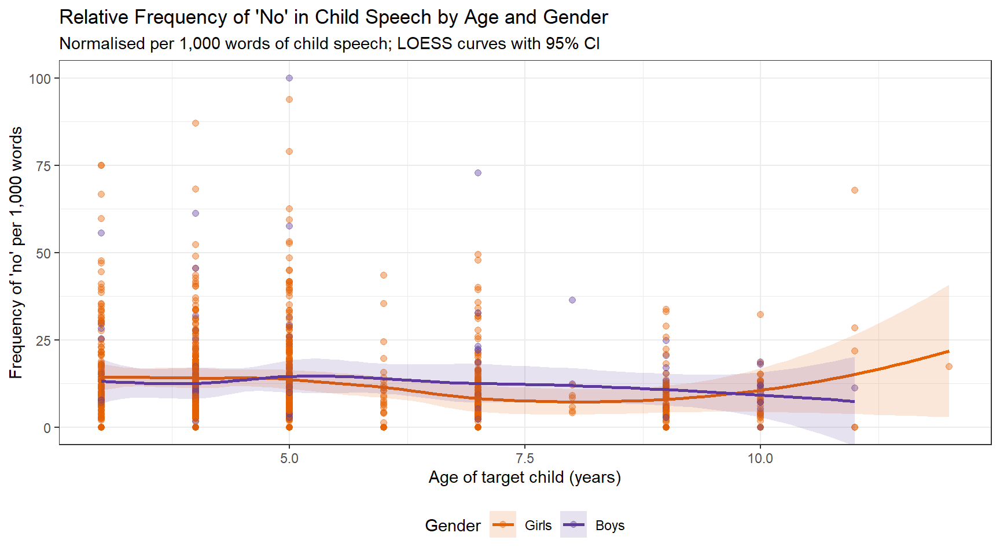
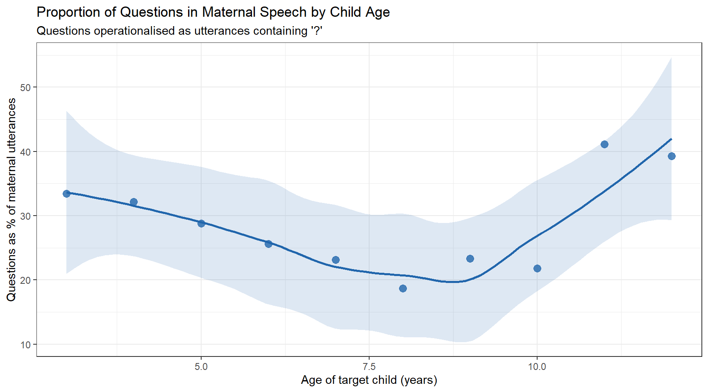
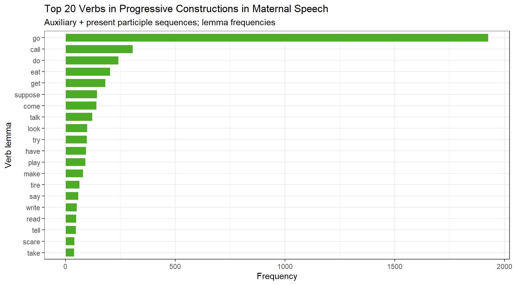
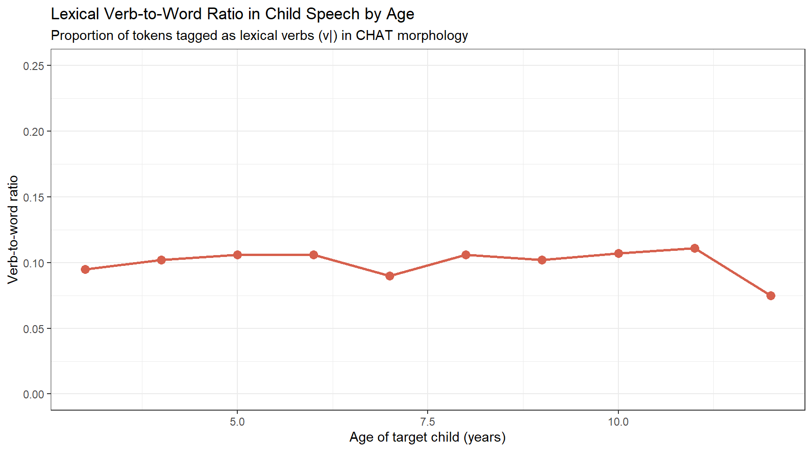
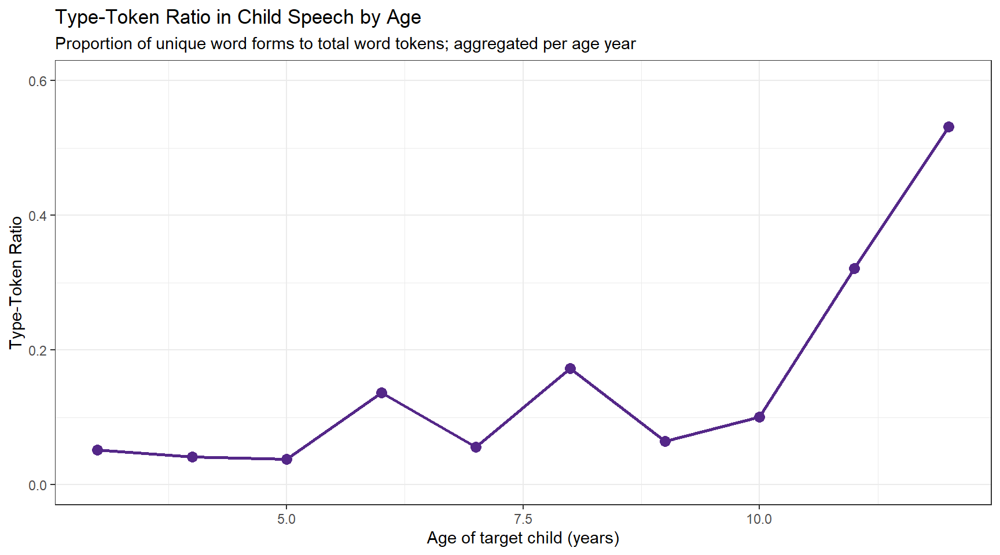
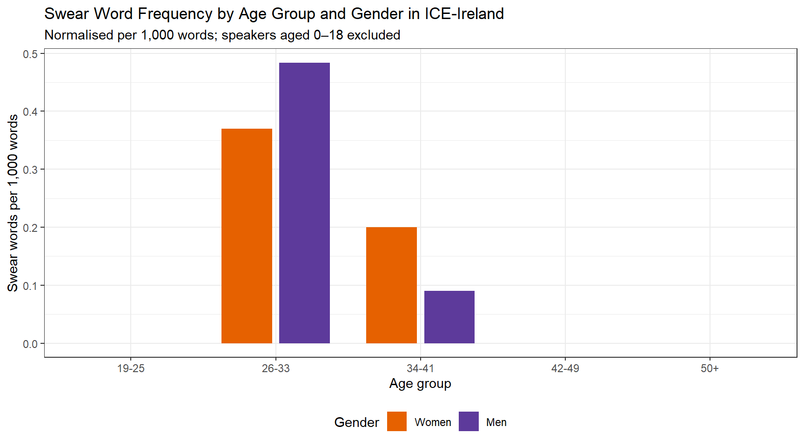

This case study tutorial demonstrates complete corpus linguistics workflows in R, covering frequency analysis, dispersion and distribution measures, comparative corpus analysis, and visualisation of corpus data across multiple research scenarios. It is aimed at researchers in corpus linguistics who want to see how R-based methods apply to real corpus research questions from start to finish.
Author
Martin Schweinberger
Published
2026
Great Court, The University of Queensland
Introduction
This showcase presents two corpus linguistic case studies that demonstrate how R can be used to investigate naturally occurring language. The first examines first language acquisition using longitudinal transcripts from the CHILDES database, tracking how children’s language grows and changes from age three to seven. The second examines sociolinguistic variation in swearing, using spoken corpus data to investigate whether age and gender predict the frequency of taboo language in Irish English conversation. Together, the two case studies illustrate the breadth of questions a corpus-based approach can address — from the fine-grained developmental trajectory of a lexical item and a grammatical category, to broad patterns of register and social variation across a speech community.
Both case studies draw on authentic, naturally occurring spoken language and follow the same general workflow: loading and tidying raw corpus data, computing frequency measures, visualising patterns, and applying inferential statistics to evaluate whether observed patterns exceed what chance alone would predict. The code is fully reproducible and can be adapted to other corpora and research questions.
Prerequisite Knowledge
Before working through these case studies, familiarity with the following is recommended:
Martin Schweinberger. 2026. Corpus Linguistics with R. The Language Technology and Data Analysis Laboratory (LADAL), The University of Queensland, Australia. url: https://ladal.edu.au/tutorials/corpus_linguistics/corpus_linguistics.html (Version 3.1.1). doi: 10.5281/zenodo.19332649.
What Is Corpus Linguistics?
Section Overview
What you’ll learn: The conceptual foundations of corpus linguistics, the main types of corpora, and the rationale for a frequency-based, data-driven approach to language study
Corpus Linguistics (CL) is both a methodology and a field of study. Its defining feature is the use of corpora — systematically compiled collections of authentic, machine-readable language — to investigate how language is actually used (Biber, Conrad, and Reppen 1998). CL emerged in the 1960s with early computational work on word frequency and collocation, but expanded dramatically from the 1990s onwards as affordable computing power made it possible to compile and query large corpora efficiently (Lindquist 2009). Today, corpus-based methods are standard across linguistics, language teaching, lexicography, translation studies, and the digital humanities.
The texts in a corpus can be very varied: newspaper articles, parliamentary debates, dinner-table conversations, mother–child interactions, academic lectures, student essays, legal documents, and social media posts have all been assembled into corpora for research purposes (McEnery and Wilson 2001). What distinguishes a corpus from an arbitrary collection of texts is principled design — decisions about what to include, how much to include, and in what proportions, made in advance and documented so that the collection can be treated as a representative sample of a defined population of language use.
Types of Corpora
Corpora vary along several important dimensions. Monitor corpora aim to represent the full range of language use within a speech community — they are large, diverse, and continuously updated (the British National Corpus and the Corpus of Contemporary American English are canonical examples). Specialised corpora, by contrast, are deliberately focused on a single register, genre, or context: a corpus of medical consultations, a corpus of second-language learner writing, or a corpus of mother–child interactions such as the one used in Case Study 1 below.
A further important distinction is between synchronic and diachronic corpora. Synchronic corpora represent language at a single point or period in time and are used to describe the current state of a variety or register. Diachronic corpora contain language samples collected across different time periods and are used to study language change. The HSLLD corpus used in Case Study 1 is longitudinal in a developmental sense: the same children are recorded repeatedly over several years, enabling the tracking of individual and group-level linguistic growth.
Why Use Corpora?
A fundamental motivation for corpus-based research is access to frequency and probability information that introspection and constructed examples cannot provide (Gries 2009). Knowing that a construction is possible in a language tells us relatively little; knowing how often it occurs, in what contexts, alongside what other words, and in the speech of which speakers tells us a great deal more. Corpora provide this distributional information at a scale and with a degree of ecological validity that controlled experimental methods cannot easily match. They capture language as it is actually produced under real communicative pressure — with all the hesitations, repairs, ellipses, and register-specific choices that characterise naturally occurring speech and writing.
The use of corpora in linguistics has grown dramatically in recent decades, driven both by the availability of large digitised text collections and by the development of software tools — including R — that make it possible to apply quantitative methods to language data without specialist programming expertise.
Loading Corpus Data into R
Most corpora — when not accessed through a web interface — are distributed as collections of plain-text or specially formatted files stored in a folder. The standard workflow is to download the corpus from a repository, store it locally, and then load the files into R for analysis. The following code illustrates the general pattern using list.files() to build a vector of file paths and sapply() to read each file.
Code
# Step 1: build a vector of file paths # (assumes corpus .txt files are in data/Corpus/ within your R project) corpusfiles <-list.files( here::here("data/Corpus"), pattern =".*.txt", # match only text files full.names =TRUE# return full paths ) # Step 2: loop over paths, load, collapse, and clean each file corpus <-sapply(corpusfiles, function(x) { x <-scan(x, what ="char", sep ="", quote ="", quiet =TRUE, skipNul =TRUE) x <-paste0(x, sep =" ", collapse =" ") x <- stringr::str_squish(x) })
CHILDES CHAT Format
The HSLLD corpus used in Case Study 1 comes in the CHAT format used by CHILDES, which stores transcripts, POS tags, speaker information, and recording metadata in a single structured file. Loading and parsing this format requires additional steps beyond the simple scan() approach above; these are covered in detail in the data processing section of Case Study 1.
Setup
Both case studies rely on the following packages. Install any that are missing, then load them at the start of each session.
Code
# Run once to install — comment out after installation install.packages("dplyr") install.packages("tidyr") install.packages("stringr") install.packages("here") install.packages("ggplot2") install.packages("flextable") install.packages("quanteda") install.packages("cfa")
Code
# Load at the start of every session library(dplyr) # data manipulation library(tidyr) # reshaping data library(stringr) # string processing library(here) # portable file paths library(ggplot2) # visualisation library(flextable) # formatted display tables library(quanteda) # corpus and KWIC infrastructure library(cfa) # Configural Frequency Analysis
Case Study 1: First Language Acquisition
Section Overview
Research questions: How does children’s use of the negation word no change with age? Do mothers adjust their questioning behaviour as children develop? Which verbs appear most frequently in progressive constructions in child-directed speech? How do children’s verb-to-word ratio and lexical diversity change across development?
Corpus: HSLLD sub-corpus of CHILDES — longitudinal home-visit recordings of 74 American English-speaking children aged 3–7, with matched maternal speech
Methods: Regex-based token extraction, normalised frequency (per 1,000 words), POS-tag filtering, type-token ratio, smooth regression and line plot visualisation with ggplot2
Background
First language acquisition (FLA) research asks how children come to master the phonological, morphological, syntactic, and pragmatic systems of their native language. Historically, researchers relied on diary studies and controlled elicitation experiments, both of which have well-known limitations: diaries are selective and subjective; experimental tasks may elicit production that does not reflect natural use. Longitudinal naturalistic recordings — transcribed and archived in a shared, reusable format — offer a more ecologically valid window into children’s developing language.
The primary repository for such data is CHILDES (Child Language Data Exchange System) (MacWhinney 1996), established in 1984 by Brian MacWhinney and Catherine Snow. CHILDES now contains transcripts, audio, and video in 26 languages from over 130 corpora, all freely available at childes.talkbank.org. The transcripts are stored in CHAT format — a structured plain-text format that encodes speaker turns, POS tags, morphological annotations, and metadata (participant ages, recording dates, activity types) in a single file. CHILDES is part of the broader TalkBank system for sharing conversational interaction data.
The HSLLD Corpus
For this case study we use the Home-School Study of Language and Literacy Development (HSLLD) corpus, part of CHILDES’s English North American collection. The HSLLD was initiated in 1987 by Patton Tabors, Catherine E. Snow, and David K. Dickinson, with the original aim of investigating the social prerequisites for literacy success in young children from low-income families.
The cohort comprised 83 American English-speaking children from racially diverse, low-income families in and around Boston, Massachusetts; 74 children were still participating at age 5. The sample included 38 girls and 36 boys. Children were visited once a year in their home between ages 3 and 5, and again in 2nd and 4th grade. Each visit lasted one to three hours, during a range of structured and semi-structured activities.
Home visit activities in the HSLLD corpus
Visit
Activities
HV1 (age ~3)
Book reading (BR), Elicited report (ER), Mealtime (MT), Toy play (TP)
HV2 (age ~4)
Book reading (BR), Elicited report (ER), Mealtime (MT), Toy play (TP)
HV3 (age ~5)
Book reading (BR), Elicited report (ER), Experimental task (ET), Mealtime (MT), Reading (RE), Toy play (TP)
HV5 (grade 2)
Book reading (BR), Letter writing (LW), Mealtime (MT)
To download the HSLLD corpus directly: (1) go to childes.talkbank.org; (2) click Index to Corpora under Database; (3) navigate to Eng-NA → HSLLD; (4) click Download transcripts; (5) unzip into the data/ sub-folder of your R project. For this showcase, we load a pre-processed version stored on the LADAL server, so no download is necessary to follow along.
Data Processing
CHAT files pack a great deal of information into a compact format that is not immediately amenable to analysis. The goal of this section is to parse the raw data into a tidy data frame where each row is one utterance and each column is one piece of associated information. The target structure looks like this:
id
file
childage
child
speaker
utterance
tagged
comment
1
aab
4;6
ben
MOT
How are you ?
How|WH are|BE you|PN ?|PC
2
aab
4;6
ben
MOT
Ben ?
Ben|NNP ?|PC
3
aab
4;6
ben
CHI
Okay .
Okay|RB .|PC
4
aab
4;6
ben
MOT
Are you hungry ?
Are|BE you|PN hungry|JJ ?|PC
5
aab
4;6
ben
CHI
No .
No|NG .|PC
shakes head
6
aab
4;6
ben
MOT
Sure ?
Sure|RB ?|PC
Loading the Raw Data
We load a pre-processed version of the HSLLD data. Each element of the resulting list corresponds to one CHAT transcript file.
CHAT files interleave speaker turns (e.g. *MOT:, *CHI:) with annotation tiers (e.g. %mor: for morphological tags). We collapse each file into a single string, insert a split marker before each tier/speaker token using the regex ([%|*][a-z|A-Z]{2,4}[0-9]{0,1}:), then split on those markers.
Code
corpus <-sapply(hslld, function(x) { x <- stringr::str_trim(x, side ="both") # strip edge whitespace x <- stringr::str_squish(x) # collapse internal whitespace x <-paste0(x, collapse =" ") # join lines into one string # insert split marker before each tier/speaker token, then split x <-strsplit( gsub("([%|*][a-z|A-Z]{2,4}[0-9]{0,1}:)", "~~~\\1", x), "~~~" ) }) str(corpus[1:3])
List of 3
$ D:\Uni\UiT\Workshops\RCHILDES\data\HSLLD/HV1/BR/acebr1.cha : chr [1:793] "@UTF8 @PID: 11312/c-00034768-1 @Begin @Languages: eng @Participants: CHI Target_Child , MOT Mother , EX1 Invest"| __truncated__ "*MOT: okay her favorite books (.) I don't read the whole stories they're too long . " "%mor: co|okay det:poss|her adj|favorite n|book-PL pro:sub|I mod|do~neg|not v|read&ZERO det:art|the adj|whole n"| __truncated__ "%gra: 1|4|COM 2|4|DET 3|4|MOD 4|0|INCROOT 5|8|SUBJ 6|8|AUX 7|6|NEG 8|4|CMOD 9|11|DET 10|11|MOD 11|8|OBJ 12|13|"| __truncated__ ...
$ D:\Uni\UiT\Workshops\RCHILDES\data\HSLLD/HV1/BR/acebr1pt2.cha: chr "@UTF8 @PID: 11312/a-00012630-1 @Begin @Languages: eng @Participants: CHI Target_Child, INV Investigator @ID: en"| __truncated__
$ D:\Uni\UiT\Workshops\RCHILDES\data\HSLLD/HV1/BR/admbr1.cha : chr [1:517] "@UTF8 @PID: 11312/c-00034769-1 @Begin @Languages: eng @Participants: CHI Target_Child , MOT Mother , UNC Uncle "| __truncated__ "*MOT: gonna read this one too which one do you want me to read first ? " "%mor: part|go-PRESP~inf|to v|read&ZERO det:dem|this pro:indef|one adv|too pro:rel|which det:num|one v|do pro:p"| __truncated__ "%gra: 1|0|INCROOT 2|3|INF 3|1|COMP 4|5|DET 5|3|OBJ 6|3|JCT 7|9|LINK 8|9|QUANT 9|1|CJCT 10|11|SUBJ 11|9|COMP 12"| __truncated__ ...
Extracting File Metadata and Utterance Content
The first element of each split file contains the CHAT header, encoding metadata such as participant list, target child age, date of birth, and recording date. All subsequent elements contain the transcript itself. We extract both separately.
Code
# Header element for each file fileinfo <-sapply(corpus, function(x) x[1]) # Utterance content: collapse, then re-split on speaker turns (*[A-Z]) content <-sapply(corpus, function(x) { x <- x[2:length(x)] x <-paste0(x, collapse =" ") x <- stringr::str_split( stringr::str_replace_all(x, "(\\*[A-Z])", "~~~\\1"), "~~~" ) }) content[[1]][1:6]
[1] ""
[2] "*MOT: okay her favorite books (.) I don't read the whole stories they're too long . %mor: co|okay det:poss|her adj|favorite n|book-PL pro:sub|I mod|do~neg|not v|read&ZERO det:art|the adj|whole n|story-PL pro:sub|they~cop|be&PRES adv|too adj|long . %gra: 1|4|COM 2|4|DET 3|4|MOD 4|0|INCROOT 5|8|SUBJ 6|8|AUX 7|6|NEG 8|4|CMOD 9|11|DET 10|11|MOD 11|8|OBJ 12|13|SUBJ 13|11|CMOD 14|15|JCT 15|13|PRED 16|4|PUNCT %tim: 37:16 "
[3] "*MOT: I give my own version . %mor: pro:sub|I v|give det:poss|my adj|own n|version . %gra: 1|2|SUBJ 2|0|ROOT 3|5|DET 4|5|MOD 5|2|OBJ 6|2|PUNCT "
[4] "*EX1: okay . %mor: co|okay . %gra: 1|0|INCROOT 2|1|PUNCT "
[5] "*EX1: that's fine . %mor: pro:dem|that~cop|be&3S adj|fine . %gra: 1|2|SUBJ 2|0|ROOT 3|2|PRED 4|2|PUNCT "
[6] "*EX1: whatever you usually do . %mor: pro:int|whatever pro:per|you adv|usual&dadj-LY v|do . %gra: 1|4|LINK 2|4|SUBJ 3|4|JCT 4|0|ROOT 5|4|PUNCT "
Building the Raw Table
We count utterances per file, replicate the file name and metadata vectors to match, and assemble a data frame.
We now systematically extract each piece of information using regular expressions, removing everything we do not want to keep. The core technique throughout is str_remove_all().
The gsub function has the general form gsub(pattern, replacement, object): it finds the pattern in object and replaces it with replacement. When we use "\\1" as the replacement, we recover the first captured group — the part of the pattern enclosed in () — while discarding everything else. This is how we extract, for example, the child’s age (a sequence of digits and semicolons) from the much longer header string.
Code
hslld <- chitb |># clean file name: keep only the base name between the last / and .cha dplyr::mutate(files =gsub(".*/(.*?)\\.cha", "\\1", files)) |># speaker: everything before the first colon; strip remaining non-word characters dplyr::mutate( speaker = stringr::str_remove_all(rawcontent, ":.*"), speaker = stringr::str_remove_all(speaker, "\\W") ) |># utterance: remove POS tier (%mor:...), all other % tiers, and speaker codes (*XXX:) dplyr::mutate( utterance = stringr::str_remove_all(rawcontent, "%mor:.*"), utterance = stringr::str_remove_all(utterance, "%.*"), utterance = stringr::str_remove_all(utterance, "\\*\\w{2,6}:"), utterance = stringr::str_squish(utterance) ) |># postag: the %mor: tier — remove everything before it, then strip other tiers dplyr::mutate( postag = stringr::str_remove_all(rawcontent, ".*%mor:"), postag = stringr::str_remove_all(postag, "%.*"), postag = stringr::str_remove_all(postag, "\\*\\w{2,6}:"), postag = stringr::str_squish(postag) ) |># comment: the %sit: tier — non-greedy .*? stops at the first % dplyr::mutate( comment = stringr::str_remove_all(rawcontent, ".*%mor:"), comment = stringr::str_remove(comment, ".*?%"), comment = stringr::str_remove_all(comment, ".*|.*"), comment = stringr::str_squish(comment) ) |># metadata fields extracted from the CHAT file header dplyr::mutate( participants =gsub(".*@Participants:(.*?)@.*", "\\1", fileinfo), # child age encoded as "years;months.days" in the header age_targetchild =gsub(".*\\|([0-9]{1,3};[0-9]{1,3}\\.[0-9]{1,3})\\|.*", "\\1", fileinfo), age_years_targetchild = stringr::str_remove_all(age_targetchild, ";.*"), gender_targetchild =gsub(".*\\|([female]{4,6})\\|.*", "\\1", fileinfo), dob_targetchild =gsub(".*@Birth of CHI:(.*?)@.*", "\\1", fileinfo), comment_file =gsub(".*@Comment: (.*?)@.*", "\\1", fileinfo), date =gsub(".*@Date: (.*?)@.*", "\\1", fileinfo), location =gsub(".*@Location: (.*?)@.*", "\\1", fileinfo), situation_raw =gsub(".*@Situation: (.*?)@.*", "\\1", fileinfo), activity =gsub(".*@Activities: (.*?)@.*", "\\1", fileinfo), homevisit = stringr::str_sub(files, 4, 6) ) |># word count per utterance (count word tokens) dplyr::mutate( words = stringr::str_replace_all(utterance, "\\W", " "), words = stringr::str_squish(words), words = stringr::str_count(words, "\\w+") ) |># remove empty rows (no speaker) and rows with malformed age strings dplyr::filter(speaker !="", nchar(age_years_targetchild) <5) |># drop raw columns, rename, add corpus metadata, decode activity codes dplyr::select(-fileinfo, -rawcontent, -situation_raw) |> dplyr::rename(transcript_id = files) |> dplyr::mutate( collection ="EngNA", corpus ="HSLLD", visit =substr(transcript_id, 6, 6), situation =substr(transcript_id, 4, 5), situation = stringr::str_replace_all(situation, "br", "Book reading"), situation = stringr::str_replace_all(situation, "er", "Elicited report"), situation = stringr::str_replace_all(situation, "et", "Experimental task"), situation = stringr::str_replace_all(situation, "lw", "Letter writing"), situation = stringr::str_replace_all(situation, "md", "Mother-defined"), situation = stringr::str_replace_all(situation, "mt", "Mealtime"), situation = stringr::str_replace_all(situation, "re", "Reading"), situation = stringr::str_replace_all(situation, "tp", "Toy play") )
id
transcript_id
speaker
utterance
postag
comment
participants
age_targetchild
age_years_targetchild
gender_targetchild
dob_targetchild
comment_file
date
location
activity
homevisit
words
collection
corpus
visit
situation
2
acebr1
MOT
okay her favorite books (.) I don't read the whole stories they're too long .
The data frame now has one row per utterance with all relevant information in separate columns. We are ready for the analyses.
Analysis 1: Children’s Use of No Over Time
Section Overview
Question: Does the relative frequency with which children produce the negation word no change between ages 3 and 7? Is there a developmental trajectory, and does it differ between boys and girls?
The word no is among the earliest and most frequent items in children’s productive vocabulary and its use has been studied extensively in FLA research (Bloom 1968). Beyond simple negation, no serves pragmatic functions — refusal, prohibition, denial, rejection — that shift in frequency and form as children’s language and social cognition develop. A corpus-based approach allows us to track these changes longitudinally across a large sample.
We extract all utterances by the target child (CHI) that contain no as a standalone word. The word-boundary regex \\b[Nn][Oo]\\b avoids false matches on substrings like nobody or know.
Raw counts are misleading because transcripts vary in length. We compute a normalised frequency — the number of no tokens per 1,000 words of child speech — which controls for differences in how much each child spoke per session.
no_freq |>ggplot(aes(x = age_years_targetchild, y = freq, colour = gender_targetchild, fill = gender_targetchild)) +geom_point(alpha =0.4, size =1.8) +geom_smooth(method ="loess", se =TRUE, alpha =0.15) +scale_colour_manual( values =c("female"="#E66100", "male"="#5D3A9B"), labels =c("Girls", "Boys"), name ="Gender" ) +scale_fill_manual( values =c("female"="#E66100", "male"="#5D3A9B"), labels =c("Girls", "Boys"), name ="Gender" ) +theme_bw() +labs( title ="Relative Frequency of 'No' in Child Speech by Age and Gender", subtitle ="Normalised per 1,000 words of child speech; LOESS curves with 95% CI", x ="Age of target child (years)", y ="Frequency of 'no' per 1,000 words" ) +coord_cartesian(ylim =c(0, 100)) +theme(legend.position ="bottom")

The smoothed trajectories reveal a clear developmental pattern. The relative frequency of no is highest at age 3, when children’s vocabulary is limited and negation is heavily reliant on this single all-purpose form. Frequency declines substantially across ages 4–6 as children acquire a more differentiated repertoire of negation strategies — not, never, auxiliary negation (don’t, can’t, won’t) — that distribute the function of negation across multiple forms. By age 7, no has settled to a lower baseline, consistent with its role as a pragmatic particle (e.g. discourse-initial no in corrections or refusals) rather than the primary negation strategy. The trajectories for boys and girls are broadly similar, though girls show a slightly steeper early decline.
Analysis 2: Maternal Questioning Behaviour Over Time
Section Overview
Question: Does the proportion of questions in mothers’ speech to their children change as the children develop? Research in child-directed speech predicts that caregivers fine-tune their linguistic behaviour to their children’s developmental level.
A substantial body of research on child-directed speech (CDS) has shown that caregivers adjust many features of their language when speaking to young children — using shorter sentences, higher pitch, more repetition, and more questions (Snow and Ferguson 1977). Questions serve important interactional functions in CDS: they invite children to participate, provide scaffolded conversational turns, and expose them to interrogative syntax. Here we investigate whether the proportion of questions in mothers’ speech changes as children grow older and become more linguistically capable.
We operationalise questions as utterances containing a question mark — a surface-level proxy that captures direct interrogatives reliably but will miss indirect questions and tag questions that were not punctuated as such by the transcribers.
qmot |>ggplot(aes(x = age_years_targetchild, y = percent)) +geom_point(size =3, colour ="#2166AC", alpha =0.8) +geom_smooth(method ="loess", se =TRUE, colour ="#2166AC", fill ="#2166AC", alpha =0.15) +theme_bw() +labs( title ="Proportion of Questions in Maternal Speech by Child Age", subtitle ="Questions operationalised as utterances containing '?'", x ="Age of target child (years)", y ="Questions as % of maternal utterances" )

The results show a non-linear trajectory. The proportion of questions is high when children are aged 3–4, consistent with the well-documented tendency for caregivers to use many yes/no and wh-questions to elicit and scaffold early conversational participation. The proportion then declines across ages 5–6 as children become more capable of initiating and sustaining conversation independently, reducing the need for mothers to maintain interaction through constant questioning. The modest uptick at ages 7–8 likely reflects the shift to more cognitively oriented activities (letter writing, experimental tasks) at the later home visits, which involve more explicit meta-linguistic questioning.
Analysis 3: Progressive Constructions in Child-Directed Speech
Section Overview
Question: Which lexical verbs appear most frequently in progressive constructions (auxiliary + present participle, e.g. is swimming) in mothers’ child-directed speech? Are there verb-semantic preferences consistent with the usage-based prediction that input to children is biased towards action and process verbs?
Usage-based theories of language acquisition predict that the verb types children encounter most frequently in specific constructions will be the ones they acquire and generalise from first (Tomasello 2003). The progressive construction — auxiliary BE + present participle — is grammatically salient and relatively transparent, appearing early in both child-directed speech and children’s own production. Examining which verbs populate this construction in the maternal input can shed light on the statistical learning environment available to children.
The HSLLD transcripts include morphological POS tags in the %mor: tier. The tag aux| marks an auxiliary verb and part| marks a present participle. We filter for utterances in which these two tags appear in sequence.
Code
# Maternal utterances containing an auxiliary + present participle sequence aux_utts <- hslld |> dplyr::filter(speaker =="MOT") |> dplyr::filter(stringr::str_detect(postag, "aux\\|\\S+ part\\|")) cat("Maternal utterances with aux + participle:", nrow(aux_utts), "\n")
In CHAT morphology tags, the form after part| is the verb lemma (base form), followed by a hyphen and any inflectional suffix code. We extract the lemma and compute a frequency ranking.
Code
# Extract participle lemma: string between "part|" and the next "-" aux_verbs <- aux_utts |> dplyr::mutate(participle =gsub(".*part\\|(\\w+)-.*", "\\1", postag)) |> dplyr::pull(participle) # Top 20 participle lemmas by frequency aux_freq <-data.frame(verb = aux_verbs) |> dplyr::count(verb, name ="freq") |> dplyr::arrange(desc(freq)) |>head(20) head(aux_freq, 10)
verb freq
1 go 1927
2 call 308
3 do 243
4 eat 205
5 get 184
6 suppose 146
7 come 143
8 talk 124
9 look 101
10 try 99
Code
aux_freq |>ggplot(aes(x =reorder(verb, freq), y = freq)) +geom_col(fill ="#4DAC26", colour ="white", width =0.75) +coord_flip() +theme_bw() +labs( title ="Top 20 Verbs in Progressive Constructions in Maternal Speech", subtitle ="Auxiliary + present participle sequences; lemma frequencies", x ="Verb lemma", y ="Frequency" )

The frequency distribution is strongly skewed. A handful of high-frequency, semantically general verbs — go, do, look, come, put, play, read, sit — dominate the progressive constructions in maternal speech. These are predominantly activity and accomplishment verbs with clear physical referents in the immediate environment, consistent with theoretical accounts predicting that caregivers’ language is grounded in the here-and-now context of joint interaction. The prevalence of movement and spatial verbs (go, come, put, sit) suggests that a significant proportion of progressive child-directed speech concerns object manipulation and spatial orientation — domains particularly salient during joint play and book-reading activities.
Analysis 4: Children’s Verb-to-Word Ratio Over Time
Section Overview
Question: Does the proportion of lexical verbs in children’s speech change with age? A growing verb-to-word ratio would indicate expanding grammatical complexity as children move from noun-heavy early speech towards more predicate-rich utterances.
Early child speech is often characterised as noun-heavy: children first acquire object labels and only later develop a productive verb vocabulary (Gentner 1982). As grammatical knowledge grows — particularly knowledge of argument structure, transitivity, and tense/aspect morphology — the proportion of lexical verbs in children’s speech is expected to increase. We count lexical verbs (tagged v| in CHAT morphology) in each child utterance. The regex ^v\\|| v\\| matches v| at the start of the tag string or preceded by a space, avoiding false matches on other tags that contain the letter v.
vwr |>ggplot(aes(x = age_years_targetchild, y = verb_word_ratio)) +geom_line(colour ="#D6604D", linewidth =1) +geom_point(colour ="#D6604D", size =3) +coord_cartesian(ylim =c(0, 0.25)) +theme_bw() +labs( title ="Lexical Verb-to-Word Ratio in Child Speech by Age", subtitle ="Proportion of tokens tagged as lexical verbs (v|) in CHAT morphology", x ="Age of target child (years)", y ="Verb-to-word ratio" )

The verb-to-word ratio rises steadily from age 3 to age 6–7, consistent with the developmental prediction. At age 3, lexical verbs account for a relatively small proportion of child speech tokens, reflecting the noun-dominated vocabulary of early language. The ratio increases through ages 4–6, tracking the acquisition of a richer verb vocabulary and more complex predicate structures. The slight plateau at the latest age points may reflect the increased proportion of metalinguistic and literacy-related talk at the grade 2/4 visits, which tends to involve more nominal constructions.
Analysis 5: Lexical Diversity Over Time
Section Overview
Question: Does children’s lexical diversity — the ratio of distinct word types to total word tokens — increase with age? A rising TTR would suggest an expanding vocabulary and a move away from repetitive, formulaic speech.
The Type-Token Ratio (TTR) is one of the most widely used measures of lexical diversity in developmental language research. It expresses the proportion of unique word forms (types) relative to total word tokens: a TTR close to 1.0 means virtually every word is used only once; a TTR close to 0 means the same words are heavily repeated. In developmental research, TTR is expected to increase with age as children’s vocabularies expand beyond a small set of high-frequency forms.
TTR Is Sensitive to Sample Size
TTR decreases as sample size increases, making cross-speaker or cross-age comparisons unreliable unless samples are equated for length. In this analysis we aggregate all child speech within each age year across the full corpus, so age groups vary in total tokens. The TTR values should be treated as indicative trends rather than precise estimates. More robust alternatives include the moving-average TTR (MATTR) and vocd-D, both of which control for sample size effects.
We aggregate all child utterances within each age year, clean the text (removing unintelligible CHAT codes xxx and zzz), and compute types and tokens.
ttr |>ggplot(aes(x = age_years_targetchild, y = TypeTokenRatio)) +geom_line(colour ="#542788", linewidth =1) +geom_point(colour ="#542788", size =3) +coord_cartesian(ylim =c(0, 0.6)) +theme_bw() +labs( title ="Type-Token Ratio in Child Speech by Age", subtitle ="Proportion of unique word forms to total word tokens; aggregated per age year", x ="Age of target child (years)", y ="Type-Token Ratio" )

The TTR rises markedly from age 3 to age 7, consistent with the developmental prediction of expanding vocabulary and decreasing reliance on a small set of frequent forms. At age 3, children’s speech is lexically repetitive — a handful of words (no, the, a, want, go) account for a disproportionately large share of all tokens. By age 7, a much larger proportion of utterances draws on lower-frequency, more semantically specific vocabulary. The sample-size caveat is worth restating: because the age-7 sample is smaller than the age-3 sample (fewer children remained and visits were shorter), the higher TTR at later ages is partly a mathematical artefact. The upward trend is nonetheless consistent with the broader developmental picture.
Case Study 2: Sociolinguistic Variation — Swearing in Irish English
Section Overview
Research question: Does the frequency of swear words in spoken Irish English vary systematically with speaker age and gender?
Corpus: 20 conversational speech files from the spoken Irish component of the International Corpus of English (ICE-Ireland; file prefix S1A, informal face-to-face conversation)
Methods: Regex-based KWIC extraction with quanteda, speaker metadata linking, normalised frequency (per 1,000 words), grouped bar plot, Configural Frequency Analysis (CFA)
Background
Swearing — the use of taboo, profane, or otherwise socially marked words as expressive intensifiers, emotional outlets, or markers of in-group solidarity — is a feature of virtually all known languages and a productive site for sociolinguistic research (Jay 2009). Studies of swearing variation have consistently found effects of age and gender, though the direction and magnitude of these effects are highly context-dependent. Research on British and Irish English has found that men swear more than women on average, but that this gap narrows or reverses in certain age groups and social contexts (McEnery 2004). Corpus-based approaches allow these patterns to be quantified across large, naturalistic samples rather than inferred from attitudinal surveys or experimental production tasks.
This case study is a simplified replication of Schweinberger (2018), which examined swearing in a sub-sample of ICE-Ireland. We use 20 conversational speech files from the spoken component of ICE-Ireland, representing spontaneous face-to-face informal conversation among adult native speakers of Irish English.
The ICE-Ireland Corpus
The International Corpus of English (ICE) is a coordinated collection of corpora of national and regional varieties of English. Each sub-corpus follows a shared design: one million words of spoken and written text produced by adult native speakers. The Irish component (ICE-Ireland) was compiled by John Kirk and is housed at the University of Zurich. The 20 files used here come from the informal conversation section (file prefix S1A), which represents spontaneous, face-to-face informal speech — the register most likely to contain taboo language.
Loading the Corpus
Code
# Define paths to the 20 ICE-Ireland conversation files corpuspath <-"tutorials/corpus_linguistics/data/ICEIrelandSample/"files <-paste0(corpuspath, "S1A-00", 1:20, ".txt") files <-gsub("[0-9]([0-9]{3})", "\\1", files) # fix three-digit zero-padding # Load and collapse each file into a single lowercase string corpus <-sapply(files, function(x) { x <-readLines(x) x <-paste(x, collapse =" ") x <-tolower(x) }) cat("Files loaded:", length(corpus), "\n")
We define regular expression patterns capturing swear words and their morphological variants. The \\b word-boundary anchor ensures we match complete words; character class ranges allow for suffixal variation (e.g. [a-z]{0,3} covers fucks, fucking, fucked).
Code
# Regex patterns for ten swear word lemmas and common variants searchpatterns <-paste0( "\\bass[ingedholes]{0,6}\\b|", "\\bbitch[a-z]{0,3}\\b|", "\\b[a-z]{0,}fuck[a-z]{0,3}\\b|", "\\bshit[a-z]{0,3}\\b|", "\\bcock[a-z]{0,3}\\b|", "\\bwanker[a-z]{0,3}\\b|", "\\bboll[io]{1}[a-z]{0,3}\\b|", "\\bcrap[a-z]{0,3}\\b|", "\\bbugger[a-z]{0,3}\\b|", "\\bcunt[a-z]{0,3}\\b")
We use quanteda::kwic() to extract keyword-in-context concordance lines with ±10 tokens of surrounding context, which allows us to verify that retrieved tokens are genuine swear words rather than false positives.
The distribution confirms that fuck and its variants dominate, followed by shit, bollocks, and arse — a pattern consistent with the literature on Irish English swearing (Schweinberger 2018). No obvious false positives are visible.
Identifying Speakers
To link swear word counts to speaker demographics we need to identify which speaker in each file produced each swear word. ICE-Ireland files encode speaker identity with a $SPEAKERID> tag preceding each contribution. We extract the speaker ID from a wide KWIC window (±1,000 tokens) that is almost certain to contain the preceding speaker tag.
Code
kwiclong <- quanteda::kwic( quanteda::tokens(corpus), searchpatterns, window =1000, valuetype ="regex") |>as.data.frame() |> dplyr::rename( File = docname, PreviousContext = pre ) |> dplyr::mutate( File = stringr::str_remove_all(File, ".*/"), File = stringr::str_remove_all(File, "\\.txt"), # Speaker ID follows the last $ and ends before > Speaker = stringr::str_remove_all(PreviousContext, ".*\\$"), Speaker = stringr::str_remove_all(Speaker, ">.*"), Speaker = stringr::str_squish(Speaker), Speaker =toupper(Speaker) ) |> dplyr::select(Speaker) # Add speaker column to the cleaned KWIC table swire <-cbind(kwicswearsclean, kwiclong)
File
PreviousContext
Token
FollowingContext
Speaker
S1A-003
suppose the worrying thing was then you realised it did
bugger-all
you know < & > laughter < / & >
A
S1A-005
was uh they just want my money and all this
shite
< # > fuck them < # > i '
B
S1A-005
want my money and all this shite < # >
fuck
them < # > i ' m never joining them
B
S1A-005
flick through them bits < # > it ' s
shite
< s1a-005 $ a > < # > all the
B
S1A-005
5 sylls < / unclear > i ' ve to
fucking
deal with that guy because he ' s a mason
B
S1A-005
guy because he ' s a mason < # >
fuck
that < s1a-005 $ c > < # > <
B
S1A-005
all < # > i ' m like dad you
fucking
joined this < & > laughter < / & >
B
S1A-005
try again < # > it ' s all just
bollocks
< s1a-005 $ b > < # > it '
A
Linking to Speaker Metadata
We aggregate swear word counts per speaker–file combination and join the speaker biodata (gender and age group).
Code
# Count swear words per speaker per file swire <- swire |> dplyr::group_by(File, Speaker) |> dplyr::summarise(Swearwords = dplyr::n(), .groups ="drop") # Load speaker biodata bio <- base::readRDS("tutorials/corpus_linguistics/data/d01.rda", "rb") |> dplyr::rename( File = text.id, Speaker = spk.ref, Gender = sex, Age = age, Words = word.count ) |> dplyr::select(File, Speaker, Gender, Age, Words)
File
Speaker
Gender
Age
Words
S1A-001
A
male
34-41
765
S1A-001
B
female
34-41
1,298
S1A-002
A
female
26-33
391
S1A-002
B
female
19-25
47
S1A-002
C
male
50+
200
S1A-002
D
female
50+
464
S1A-002
E
male
34-41
639
S1A-002
F
female
26-33
308
Code
# Left-join: speakers with no swear words receive count 0 swire <- dplyr::left_join(bio, swire, by =c("File", "Speaker")) |> dplyr::mutate( Swearwords =ifelse(is.na(Swearwords), 0, Swearwords), File =factor(File), Speaker =factor(Speaker), Gender =factor(Gender), Age =factor(Age) )
Normalised Frequencies by Age and Gender
Raw swear word counts cannot be compared across speakers because speakers contribute different amounts of speech. We normalise by dividing total swear words per age–gender group by the total words spoken in that group, expressed per 1,000 words.
swire_clean |> dplyr::group_by(Age, Gender) |> dplyr::summarise( Swears_ptw =round(sum(Swearwords) /sum(Words) *1000, 3), .groups ="drop" ) |>ggplot(aes(x = Age, y = Swears_ptw, group = Gender, fill = Gender)) +geom_col(position =position_dodge(width =0.8), width =0.7) +scale_fill_manual( values =c("female"="#E66100", "male"="#5D3A9B"), labels =c("Women", "Men") ) +theme_bw() +labs( title ="Swear Word Frequency by Age Group and Gender in ICE-Ireland", subtitle ="Normalised per 1,000 words; speakers aged 0–18 excluded", x ="Age group", y ="Swear words per 1,000 words", fill ="Gender" ) +theme(legend.position ="bottom")

The grouped bar chart reveals that overall gender differences in swearing frequency are modest for most age groups, but two age brackets stand out. Among speakers aged 26–33, men swear markedly more frequently than women. This pattern reverses in the 34–41 bracket, where women produce a higher normalised rate. From age 42 onwards the rates converge. These findings broadly replicate the age–gender interaction reported in Schweinberger (2018) and are consistent with sociolinguistic accounts of swearing as a register-sensitive behaviour whose social meaning and acceptability differs by cohort and context.
Statistical Analysis: Configural Frequency Analysis
To determine which specific age–gender combinations show statistically significant over-use or under-use of swear words relative to what the marginal frequencies would predict, we apply Configural Frequency Analysis (CFA) (Lienert and Krauth 1975). CFA is a non-parametric method well-suited to cross-classified count data. It tests, for each cell in a contingency table, whether the observed frequency departs significantly from the expected frequency under independence, using a chi-square statistic with Bonferroni correction for multiple comparisons.
Code
# Prepare data: swear word and non-swear word counts per Age × Gender cell cfa_data <- swire_clean |> dplyr::group_by(Gender, Age) |> dplyr::summarise( Words =sum(Words), Swearwords =sum(Swearwords), .groups ="drop" ) |> dplyr::mutate(Words = Words - Swearwords) |># non-swear word tokens tidyr::pivot_longer( cols =c(Words, Swearwords), names_to ="Type", values_to ="Frequency" ) |> dplyr::filter(Age !="0-18")
Gender
Age
Type
Frequency
female
19-25
Words
62,535
female
19-25
Swearwords
0
female
26-33
Words
35,124
female
26-33
Swearwords
13
female
34-41
Words
15,014
female
34-41
Swearwords
3
female
42-49
Words
10,785
female
42-49
Swearwords
0
female
50+
Words
38,683
female
50+
Swearwords
0
male
19-25
Words
8,826
male
19-25
Swearwords
0
Code
configs <- dplyr::select(cfa_data, Age, Gender, Type) counts <- cfa_data$Frequency # Run CFA; filter to significant swear word over-use cfa(configs, counts)$table |>as.data.frame() |> dplyr::filter( p.chisq < .05, stringr::str_detect(label, "Swear") ) |> dplyr::select(label, n, expected, chisq, p.chisq, sig.chisq)
The CFA confirms that the age–gender interactions visible in the bar chart are statistically significant: men aged 26–33 and women aged 34–41 show significantly higher swearing rates than would be expected from the marginal totals alone (p < .05, Bonferroni-corrected). No other age–gender combination reaches significance for swear word over-use.
Limitations
This analysis is based on a small sub-sample of 20 ICE-Ireland files and should be treated as illustrative rather than definitive. A more robust study would use the full ICE-Ireland spoken corpus, apply more sophisticated normalisation, and consider genre and interlocutor familiarity as potential confounds. The regex-based swear word operationalisation also excludes milder expletives, dialect-specific forms, and code-switched taboo language.
Summary
These two case studies demonstrate several core features of corpus-based research in linguistics. Working from authentic spoken language data, both studies follow a common workflow — loading and tidying raw corpus files, computing normalised frequency measures, visualising patterns, and applying inferential tests — while addressing fundamentally different research questions.
The HSLLD analyses show how a single richly annotated longitudinal corpus can support multiple converging analyses of language development. The five analyses together paint a coherent picture: young children begin with a small, repetitive vocabulary dominated by a few high-frequency forms and develop, over the preschool and early school years, towards more varied, grammatically complex, and lexically diverse speech. Maternal speech adapts to children’s growing competence — question rates are high when children are youngest and most in need of conversational scaffolding, and the progressive constructions children hear are populated by semantically transparent, physically grounded verbs. These findings align with a usage-based model of acquisition in which the statistical properties of the input shape the trajectory of development.
The ICE-Ireland swearing study demonstrates a different use of corpus methods: the investigation of sociolinguistic variation across demographically defined sub-groups. The finding that swearing rates peak for men aged 26–33 and for women aged 34–41 — with the two groups otherwise showing comparable rates — adds to a growing body of evidence that the social meaning of swearing is negotiated differently across age cohorts and that gender effects in taboo language use are not uniform across the life span.
Together, the case studies illustrate both the power and the limitations of corpus methods. Corpora provide frequency information at a scale that no other method can match and allow hypotheses about language use to be tested against naturalistic data. But the results are always shaped by corpus design, annotation quality, pre-processing choices, and the operationalisation of the phenomena under study. Responsible corpus-based research requires explicit documentation of all these choices and honest acknowledgement of the interpretive limits they impose.
Citation and Session Info
Citation
Martin Schweinberger. 2026. Corpus Linguistics with R. The Language Technology and Data Analysis Laboratory (LADAL), The University of Queensland, Australia. url: https://ladal.edu.au/tutorials/corpus_linguistics/corpus_linguistics.html (Version 3.1.1). doi: 10.5281/zenodo.19332649.
@manual{martinschweinberger2026corpus,
author = {Martin Schweinberger},
title = {Corpus Linguistics with R},
year = {2026},
note = {https://ladal.edu.au/tutorials/corpus_linguistics/corpus_linguistics.html},
organization = {The Language Technology and Data Analysis Laboratory (LADAL), The University of Queensland, Australia},
edition = {3.1.1}
doi = {10.5281/zenodo.19332649}
}
This tutorial was re-developed with the assistance of Claude (claude.ai), a large language model created by Anthropic. Claude was used to help revise the tutorial text, structure the instructional content, generate the R code examples, and write the checkdown quiz questions and feedback strings. All content was reviewed, edited, and approved by the author (Martin Schweinberger), who takes full responsibility for the accuracy and pedagogical appropriateness of the material. The use of AI assistance is disclosed here in the interest of transparency and in accordance with emerging best practices for AI-assisted academic content creation.
Biber, Douglas, Susan Conrad, and Randi Reppen. 1998. Corpus Linguistics: Investigating Language Structure and Use. Cambridge Approaches to Linguistics. Cambridge: Cambridge University Press. https://doi.org/10.1017/CBO9780511804489.
Bloom, Lois Masket. 1968. “Language Development: Form and Function in Emerging Grammars.”
Gentner, Dedre. 1982. “Why Nouns Are Learned Before Verbs: Linguistic Relativity Versus Natural Partitioning.”BBN Report; No. 4854.
Jay, Timothy. 2009. “The Utility and Ubiquity of Taboo Words.”Perspectives on Psychological Science 4 (2): 153–61.
Lienert, Gustav A, and Joachim Krauth. 1975. “Configural Frequency Analysis as a Statistical Tool for Defining Types.”Educational and Psychological Measurement 35 (2): 231–38.
Lindquist, Hans. 2009. Corpus Linguistics and the Description of English. Vol. 104. Edinburgh: Edinburgh University Press.
McEnery, Tony. 2004. Swearing in English: Bad Language, Purity and Power from 1586 to the Present. Routledge.
McEnery, Tony, and Andrew Wilson. 2001. Corpus Linguistics - an Introduction. 2nd ed. Edinburgh: Edinburg University Press.
Schweinberger, Martin. 2018. “Swearing in Irish English – a Corpus-Based Quantitative Analysis of the Sociolinguistics of Swearing.”Lingua 209: 1–20. https://doi.org/https://doi.org/10.1016/j.lingua.2018.03.008.
Snow, Catherine E, and Charles A Ferguson. 1977. “Talking to Children.”London: Cambridge.
Tomasello, Michael. 2003. Constructing a Language: A Usage-Based Theory of Language Acquisition. Vol. 26. Cambrigde: Harvard University Press. https://doi.org/https://doi.org/10.1017/s0272263104363059.